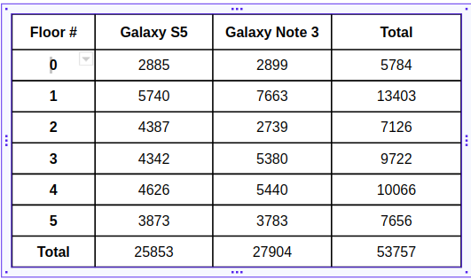

Floor Localization
- Aya Ashraf 02
- Khaled Barie 21
Problem Statement
Create a floor localization system that can predict a user’s floor depending only on cellular signals

Dataset
Due to the lack of proper datasets, we decided to collect our own by selecting a building on campus and collecting RSS samples using a set of phones. The process of collection involves starting an RSS logging app that can scan access the cellular API of the phone and produce RSS logs in a file. These logs are then tagged with the floor they were tagged from and processed to generate our training and test datasets. The data we collected was from the Electrical Engineering building in the Faculty of Engineering, Alexandria University which has 6 floors. Five different phones on two carriers were used in the collection process. Collected data undergoes the same pre-processing mentioned in [1] to produce RSS vectors used in training during the offline phase and for testing in the online phase .
vodafone dataset
Orange dataset
Input/Output Examples
Input is Fingerprints which are organized as a vector of the received signal strength heard from different cell towers in the area of collection. Each sample is paired with the floor it is collected from
The output is the floor number predicted used the Rss sample heard in the online phase
State of the art
SkyLoc [2] solve the same problem by Calculating euclidean distance in RSS space from collected samples to estimate the floor of new samples
Fully Connected Architecture
Time Series Classification Architectures
We formalized the problem as a sequence model, leveraging a history of RSS scans to produce better predictions
SerieNet Model
An architecture used in time series forecasting.We adapted the model to our problem by replacing the last layer with a softmax layer
InceptionTime Model
Inspired from the Inception network architecture, using different kernels for convolution and concatenating their results
Inception Unit
A full InceptiontionTime network comprising of successive inception units with residual connections
ResNet Model
Follows the same architecture of the original ResNet but uses 1D convolutions
Results
For evaluation, we tested our models against the SkyLoc system[2] from literature. We start by evaluating our models against homogeneous datasets, i.e datasets train and test data are both sampled from the same collection/distribution (Either from the data of one mobile phone or from a shuffled collection from several phones). Accuracies of SkyLoc and the FC architecture are shown in the following table.
Accuracy of SkyLoc and FC models under homogeneous datasets from different devices
We then proceeded to experiment with heterogeneous datasets where train and test data are collected from different phones. We used a “leave on out” approach where we train our model using data from all phones except one, and use unseen data from that remaining phone for validation and test.Results are summarized in Table and the plot in Figure showing within-k-floors accuracy at different values of K.
Technical report
Here you will detail the details related to training, for example:
- Programming framework
- TensorFlow keras
- keras
- Training hardware
- Google Colab
- Training time
- On average 10 minutes
- Number of epochs
- On average 5 to 20
- Time per epoch
- On average 1 minute
Conclusions
- Alot of variations affect cellular data received by phones. Main variation factors we encountered:
- Device/Hardware
- Signal power variation overtime
- Cell tower dropping
- Training hardware i.e. colab or azure or anything else
- We recently conducted another round of data collection
- We seperated the collection of training and test data and accuracy dropped to 30% on homogeneous data
Future Work
We have recently collected more data from the same building as well as from another building (Administration building in the Faculty of Engineering). We aim to use this data to further investigate the behavior of scanned RSS samples and generate more insights to help us produce better-performing models.